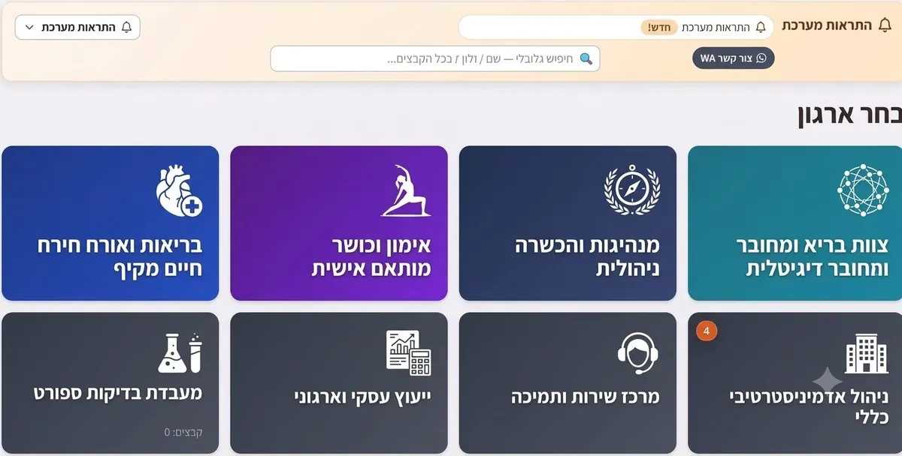

מחפשים מקום אחד לחוזים, הצעות מחיר ומסמכי לקוחות? כתבנו על זה מדריך נפרד: מערכת ניהול מסמכים עסקיים בתוך ה-CRM. כאן נתמקד בניהול פניות במוקד.
לקוח מתקשר לבטל מנוי, הנציג רושם את זה בקובץ משותף, ומשם הפנייה תלויה במזל. אולי מנהל יראה אותה היום, אולי בעוד שבוע. כשהלקוח מתקשר שוב ושואל למה אף אחד לא חזר אליו, אין לאף אחד תשובה: מי קיבל את הפנייה, מתי, ומה נעשה איתה. במוקד שמטפל בעשרות פניות ביום, בשביל כמה לקוחות עסקיים, זה קורה כל הזמן.
הבעיה: פניות נרשמות, אבל אף אחד לא עוקב אחריהן
ברוב המוקדים הפניות נרשמות איפשהו: קובץ אקסל משותף, מייל לצוות, הודעה בקבוצת וואטסאפ. הרישום עצמו הוא לא הבעיה. הבעיה היא שאין שום דבר שמתריע כשפנייה מחכה יותר מדי. כל נציג כותב בצורה אחרת, חסרים פרטים, ואין דרך לדעת כמה פניות פתוחות יש עכשיו ואיזה מהן כבר באיחור. מנהל המוקד מגלה את זה רק כשהלקוח העסקי מתלונן.
איך עובדת מערכת לניהול פניות עם זמני טיפול
בשביל הפער הזה בנינו ב-A.L Systems את FileManager, מערכת לניהול פניות לקוחות במוקד שירות. העיקרון פשוט: כל פנייה נרשמת בטופס קבוע, לכל טופס יש זמן טיפול, והמערכת עוקבת בעצמה.

- טופס לכל סוג פנייה. כל לקוח עסקי של המוקד מוגדר כארגון, ולכל ארגון יש טפסים משלו: ביטולים, תקלות, החזרים. בכל טופס יש הנחיות לנציג, שדות חובה, רשימות בחירה וצירוף אסמכתא.
- זמן טיפול (SLA) לכל טופס. למשל "עד 2 ימי עסקים". השעון מתחיל לרוץ ברגע שהנציג שומר את הפנייה.
- חריגות שמסומנות לבד. פנייה שעברה את זמן הטיפול מסומנת באדום, ובמסך הראשי של המנהל מופיע מה ממתין לטיפול ואיפה יש חריגות.
- התראה בוואטסאפ ודוח שבועי. מנהלי המוקד מקבלים בוואטסאפ את רשימת הטפסים שיש בהם חריגות, ויש דוח שבועי מסכם שאפשר לשלוח במייל.
- כניסה מאובטחת. נציגים נכנסים עם קוד אישי ואימות דו-שלבי באפליקציית Authenticator, וכל מנהל רואה רק את הארגונים והטפסים שבאחריותו.
הדגמה חיה
נסו בעצמכם: מהפנייה ועד החריגה
בהדגמה תיכנסו כנציג עם קוד ואימות דו-שלבי, תזינו פנייה, תעברו לכובע של המנהל ותטפלו בה, ואז תראו מה קורה לפנייה שלא טופלה בזמן: חריגה, התראה בוואטסאפ ודשבורד. הכל מדומה, בלי הרשמה ובלי להתקין כלום.
דוגמה: מוקד שמשרת כמה לקוחות עסקיים
מוקד שירות חיצוני מטפל בפניות של רשת חדרי כושר, של חברת ביטוח ושל חנות אונליין. לכל אחד מהם סוגי פניות אחרים וזמני טיפול אחרים שסוכמו בחוזה. במערכת כל לקוח עסקי מקבל ארגון עם טפסים משלו. הנציג בוחר ארגון, בוחר טופס וממלא. מנהל הצוות של חדרי הכושר רואה רק את הפניות של חדרי הכושר, ויודע בכל רגע כמה ממתינות וכמה בחריגה. כשלקוח עסקי שואל "כמה פניות טופלו בזמן החודש?", יש תשובה מדויקת וקובץ אקסל לשלוח.
למה דווקא זמן טיפול משנה את התמונה
בלי זמן טיפול מוגדר, כל פנייה פתוחה נראית אותו דבר: פנייה מהבוקר ופנייה מלפני שבוע. ברגע שלכל טופס יש SLA, הסדר משתנה. המנהל רואה קודם את מה שקרוב לחריגה או כבר בחריגה, והצוות יודע מה דחוף. גם את הלקוח העסקי של המוקד זה משרת: ההתחייבות שלכם אליו כתובה במערכת ונמדדת, ולא נשענת על זיכרון.
אקסל משותף, מערכת טיקטים כללית, או מערכת מותאמת
אקסל משותף הוא נקודת התחלה טובה, אבל הוא לא מתריע ולא אוכף מבנה. מערכות טיקטים כלליות בנויות בעיקר לתמיכה טכנית בתוך חברה אחת, ומוקד שמשרת כמה לקוחות עסקיים מוצא את עצמו מתאים את העבודה למערכת במקום להפך. מערכת שנבנית לפי המוקד מתחילה מהמבנה שלכם: הלקוחות העסקיים, סוגי הפניות, זמני הטיפול ומי צריך לקבל התראה.